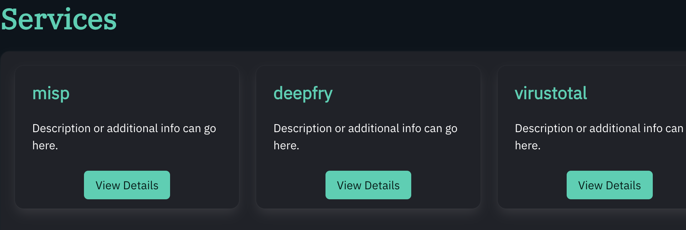
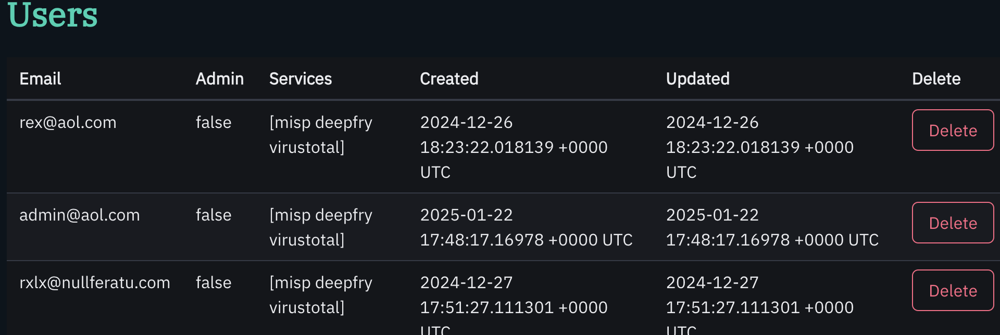
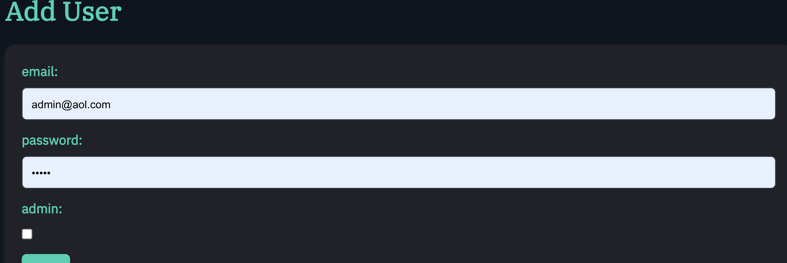
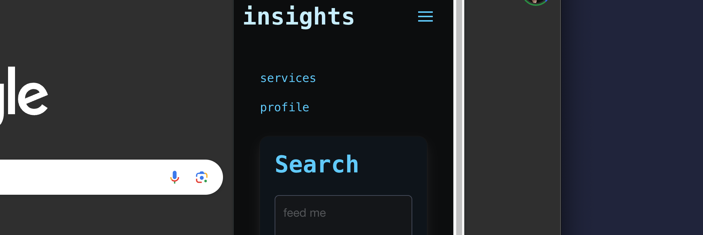
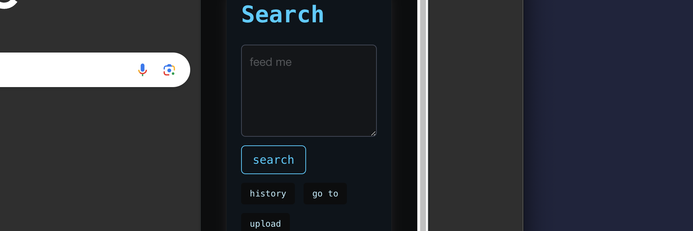

administration
documentation for live server administration
login

to login to the server, enter the server url in the browser, enter your credentials, and click on the
login button
you will be redirected to services screen as shown above
users

view and delete users
view and delete users in the "users" menu

add a user
add a user by clicking on the "add user" link in the navigation bar
- click on the "add user" link in the navigation bar
- fill in the form with the user's details
- click on the "add user" button. a prompt will appear informing you of a one time key appearing
on screen
- click ok and copy the one time key and give it to the user
you can now view the user in the users section
edit a user
re-add a user to change their password. there is no update user function from the perspective of the forntend at this time (although the capability exists)
services
you can view details about the the configured services here
logging
view logs in the "logs" menu
responses
view all cached responses in the "responses" menu
stats
view application graphs in the "stats" menu
API
API documentation for the threatco server and insights extension.
Authorization headers are required to make API calls and are generated by your admin.
Authorization: user@place.com:key_here
Endpoints
GET /logs
returns a list of all logs ordered by when they occured
[{"time":"2025-01-30T07:15:11.800719266-06:00","data":"Server started at :8081","error":false}]
GET /events/:id
returns the actual third party response that was cached
POST /parse
returns a list of summarized repsonses
[{"timestamp":"0001-01-01T00:00:00Z","matched":true,"error":false,"background":"has-background-primary-dark","from":"deepfry","id":"1","attr_count":0,"link":"4f82d899-9572-4aa0-a584-04fe0f30168b","threat_level_id":"1","value":"8.8.8.8","info":"that IP looks nosey!"}]
requiries:
{"blob": "text to parse"}
POST /pipe
returns a summarized repsonse from the specified vendor
{"timestamp":"0001-01-01T00:00:00Z","matched":true,"error":false,"background":"has-background-primary-dark","from":"deepfry","id":"1","attr_count":0,"link":"4f82d899-9572-4aa0-a584-04fe0f30168b","threat_level_id":"1","value":"8.8.8.8","info":"that IP looks nosey!"}
requiries:
{"value": "8.8.8.8", "to": "deepfry", "type": "ipv4"}
optional fields:
"route": "ip_address". specifices an additional url element to add to the base url for that vendor
if the API requests calls for it.
GET /getservices
returns a list of all services available
[{"upload_service": false,"expires": 0,"secret": "","selected": false,"insecure": false,"name": "misp-dev","url": "https://192.168.86.91:443","rate_limited": false,"max_requests": 0,"refill_rate": 0,"auth_type": "","key": "","kind": "misp","type": ["md5","sha1","sha256","sha512","ipv4","ipv6","email","url","domain","filepath","filename"],"route_map": null,"description": ""}]
extension
documentation for using the insights extension
menu

The services option allows the user to enable and disable the services provided by the server.
changes made are synced to the server per user
The profile option allows the user to configure the server url and email / key.
search

the search field accepts blobs of text and will parse "indicators" from the provided data. each
indicator match is categorized and sent to respective services configured on the server.
a history of 24 results are kept in a first in first out queue
a user can get exact responses with "goto" and an ID that matches a response that has not expired.
though this can be achieved with the "view" button seen on each result
server
documentation for configuring and using the threatco server
configuration
the server configuration is located in the data/config.json file. the following options are
available:
- server_id: a unique identifier for the server
- first_user_mode: if true, the server will only allow one user to be created
- bind_address: the address the server will bind to
- fqdn: the fully qualified domain name of the server
- services: a list of services the server will use
- http_port: the port the server will listen on for http
- https_port: the port the server will listen on for https
- http_too: if true, the server will listen on both http and https
- tls_cert: the path to the tls certificate
- tls_key: the path to the tls key
- cert_auth: if true, the server will require client certificates
- db_location: the path to the database file
- session_token_ttl: the time in minutes a session token will last
- response_cache_expiry: the time in minutes a response will last in the cache
- stat_cache_tick_rate: the time in minutes the server will update the stats
logging
the server logs to stdout and stderr. some logs are also duplicated on the frontend and served over
the api. There is no way to control log level currently
dependencies
server
server configuration
by default, the system will use data/config.json. please view the options available for configuration
frontend
the frontend is written in html, css, and javascript. it uses the following dependencies served
statically from the server (no CDN):
- htmx
- IBMPlex fonts
- bulma css
software dependencies
the server is written in go and uses the following dependencies:
- github.com/alexedwards/scs/v2 v2.8.0
- github.com/go-echarts/go-echarts/v2 v2.4.1
- github.com/google/uuid v1.6.0
- go.etcd.io/bbolt v1.3.11
- golang.org/x/crypto v0.31.0
- github.com/jackc/pgx/v5
database
the server requires a database connection, and supports two modes:
- embded with bbolt
- postgres
extension
client configuration
the client configuration is located in the profile section of the menu
services
third party services are developed and configured server side. the user saves their preferred
services in the services menu
software dependencies
the extension is written in javascript and uses the following dependencies served statically from
chrome (no CDN):
- IntelOneMono fonts
- bulma css
knowledge base
A fully responsive site template designed by HTML5 UP and
released
for free under the Creative Commons license.
source code
the source code for the threatco server
the source code for the insights extension
deployment
documentation for installing threatco. see dependencies to ensure smooth installation
system requirements
operating system
the server has been tested on linux, mac, and windows. Linux is the recomended OS
hardware
The memory and cpu requirments will scale up with users and usage. for deployments handling less than
100 rps, any deployment will likely suffice. if you want to handle thousands of requests a second
with little or no network latency, I recommend:
- 6 cores
- 8GB of ram
- 128+ GiB storage
software
the server requires go 1.23 or higher and git
basic install
clone the repository
git clone https://github.com/rexlx/threatco.git
cd into the directory
cd threatco
build the server
go build .
view the config and consider options
./threatco -h;vim data/config.json
run the server
./threatco -static "./static" -config data/config.json -db "user=postgres password=tacointhealley host=192.168.86.120 dbname=threatco" -kb ./kb/
the servers default flags are written for docker, which is why so many have to be supplied when
running bare metal.
they can be overwritten in server.go to run with less flags
server options
- -static: the path to the static files for the server frontend
- -config: the path to the config file
- -db: the database connection string OR embedded db file location
- -kb: the path to the knowledge base. without this flag the server wont host the knowledge base
- -delete (optional): delete the config file after reading it
- -firstuse (optional): leaves api route for creating users unprotected
- -fqdn (optional): set the url of the server
docker / podman
build the image
docker build -t threatco .
run the image
docker run -d -p 8081:8081 threatco
there is also a docker-compose.yml for docker-compose